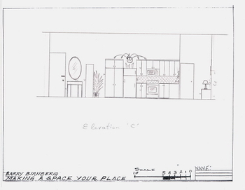
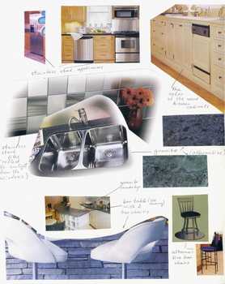
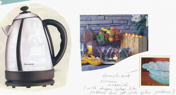

|

The elevation on the right schematically shows the part of a kitchen. Another (sink containing) part is represented on the elevation of the previous paragraph.
Kitchen cabinetory as all wood furniture in the room is of Natural Maple Colour which contrasts very well with stainless steel appliances and tiles
reflecting the sunlight from the windows, so that during daytime it's no need to turn on the artificial light.

The branchy wall-mounted lighting fixture is placed above the fridge. It is of the same style as the most of lighting in the room (like chandelier and
standing lamps, and lamps on the walls).
Under the upper kitchen cabinets the tubs of fluorescent lighting are installed.
The part of the kitchen which is adjoined to the dividing wall between the room and washroom contains stainless steel sink and doesn't have upper cabinets.
Instead of them a big thermoformed glass artwork (of cherry, aqua-green, and yellow colours) beautifies the wall.

Fluorescent tubs are hid behind the
stainless steel (up and down directed) wings. This construction provides light during working near the sink and illuminates the picture on the wall.
There is a huge wood wardrobe near the kitchen for storing clothes and other stuff.
The part of the Entrance Area
The entrance part is divided from kitchen by a thermoformed aqua-green glass standing screen with cherry blossom and yellow patterns on it. Decorative
plant is placed in the corner between the screen and wardrobe. This fabulous screen balances the picture on the kitchen wall, and the patterns of cherry
colour make the accent harmonizing with draperies and feminine arm-chair of the central area.
On the other side of the screen the console table is located with an oval mirror above.
|